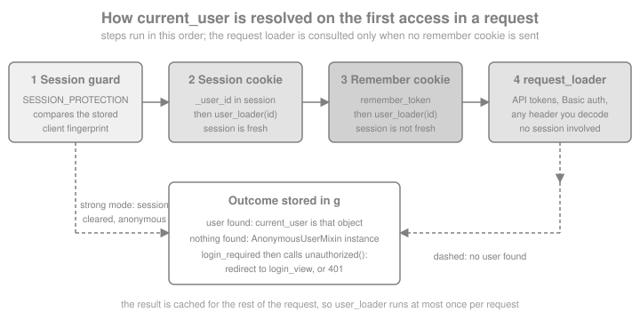

Authentication & Flask-Login
|
This content was generated with the assistance of AI and should be verified against the official documentation before being relied on in production. |
This page is written against Flask 3.1.3, Werkzeug 3.1.9, ItsDangerous 2.2.0, Flask-Login 0.6.3, Flask-SQLAlchemy 3.1.1, Flask-WTF 1.3.0 and Python 3.13, checked on 2026-10-07; every example was executed with those versions (plus argon2-cffi 25.1.0 and bcrypt 5.0.0 for the hashing section). Flask 3.2 is not released yet and its unreleased changelog does not touch the authentication machinery described here. The Flask-Login documentation site already describes a 0.7.0 that is not on PyPI (the latest release is still 0.6.3, from October 2023), so the page notes where the two differ.
Authentication answers "who is this request from?"; authorization answers "may that person do this?". Flask ships
neither as a feature: it gives you the building blocks (a signed session, before_request hooks, Werkzeug’s password
hashing helpers and ItsDangerous for signed tokens) and leaves the policy to you. This page builds a complete sign-in
for the running Bookshelf application in layers: first how to store passwords, then a hand-written session login (what
the official Flaskr tutorial does), then the same application with Flask-Login, which adds the pieces the
hand-written version lacks (a remembered login, freshness, session protection, a pluggable user loader), and finally
password reset tokens, testing and a security checklist. Roles and permissions are the subject of the
authorization and roles page of this section, token authentication for APIs belongs to the page about JWT and API authentication,
and "Sign in with Google" and LDAP belong to the page about OAuth social login and LDAP; the protocol theory behind the
last two lives in the OAuth section of this site and is not repeated.
The Ways to Authenticate in Flask
Pick the mechanism by the kind of client, not by fashion. A browser application with server-rendered pages and one trusted origin is best served by a session cookie; an API consumed by scripts and mobile apps by tokens.
| Approach | What carries the identity | Fits | Notes |
|---|---|---|---|
Hand-written session login |
The signed session cookie holds a user id |
Learning, very small apps, the Flaskr tutorial |
You write and maintain every edge case; no remember-me, no freshness |
Flask-Login |
The session cookie, plus an optional remember-me cookie |
Server-rendered applications and browser clients |
Maintained by the Pallets-Eco community; deliberately small: it manages the session, not users or passwords |
Flask-Security-Too |
Flask-Login underneath |
Registration, confirmation e-mail, reset, two-factor and roles out of the box |
Opinionated and larger; see Other Options |
Token authentication (JWT, API keys, Basic) |
An |
APIs, mobile clients, service-to-service calls |
Covered by the page about JWT and API authentication; |
External identity provider (OAuth 2 and OpenID Connect, LDAP) |
The provider’s assertion, then your own session |
Social login, single sign-on, corporate directories |
Covered by the page about OAuth social login and LDAP; you still end by calling |
Whatever the front door, the back half is the same: after the credentials are verified the application remembers the
identity for the following requests, almost always in the session described in
Sessions, Cookies & Flashing. Everything below depends on that
page’s rules: the cookie is signed but not encrypted, SECRET_KEY must be strong and secret, and a copied cookie stays
valid until it expires.
Storing Passwords: Hash, Never Encrypt
A password is never stored, and never logged. The application stores the output of a deliberately slow, salted password hashing function and verifies a login by hashing the candidate again. The salt (random, per password, stored inside the hash string) defeats precomputed tables; the cost (time and memory per guess) is what makes brute force expensive after a database leak. General-purpose hashes such as SHA-256 or MD5 are fast by design and are the wrong tool. OWASP’s Password Storage Cheat Sheet ranks Argon2id first, then scrypt, then bcrypt, then PBKDF2 for environments that require FIPS 140 validation.
Werkzeug: generate_password_hash and check_password_hash
Flask depends on Werkzeug, which ships werkzeug.security.generate_password_hash(password, method="scrypt",
salt_length=16) and check_password_hash(pwhash, password). The result is one self-describing string,
method$salt$hash, so the method and its parameters travel with each hash and can change over time.
from werkzeug.security import check_password_hash, generate_password_hash
passphrase = "a long passphrase typed by the user"
stored = generate_password_hash(passphrase) # scrypt by default since Werkzeug 3.0
assert stored.startswith("scrypt:32768:8:1$")
assert check_password_hash(stored, passphrase)
assert not check_password_hash(stored, "a different passphrase")
# Hashes are salted: the same password never produces the same string twice.
assert generate_password_hash(passphrase) != stored
# Other methods and custom cost parameters are selected through the method string.
assert generate_password_hash(passphrase, method="pbkdf2").startswith("pbkdf2:sha256:1000000$")
assert generate_password_hash(passphrase, method="scrypt:65536:8:1").startswith("scrypt:65536:8:1$")
assert generate_password_hash(passphrase, method="pbkdf2:sha512:600000").startswith("pbkdf2:sha512:600000$")
# A value that is not a Werkzeug hash string simply does not verify.
assert check_password_hash("not a hash", passphrase) is False
print(stored.split("$")[0])| Method string | Default parameters | Comment |
|---|---|---|
|
|
Memory-hard; raise N (a power of two) to make guessing more expensive; needs OpenSSL with scrypt support, which every current Python build has |
|
|
Accepted choice where FIPS validation is required; the iteration count is the only cost knob |
|
Whatever you spell |
Useful to raise or lower the cost explicitly |
Plain hashes such as |
none |
Fast by design; deprecated in Werkzeug 2.3 and removed in 3.0, so old hashes of this kind no longer verify |
The salt_length argument (default 16 characters) is rarely worth changing. The books show
generate_password_hash(password) without a method; in the Werkzeug releases they were written for that meant
PBKDF2-SHA256 with a much lower iteration count (260,000 until Werkzeug 2.3 raised it to 600,000), while since
Werkzeug 3.0 it means scrypt and, for PBKDF2, 1,000,000 iterations since 3.1. A
database that holds old pbkdf2:sha256:... strings keeps working, because the parameters are inside each string; new
hashes simply use the new default.
Choosing a Cost and Upgrading Hashes Over Time
Tune the cost so that one hash takes a noticeable fraction of a second on your production hardware, and re-measure when
the hardware changes. A hash is also CPU-and-memory work done inside a request: an unthrottled login endpoint is a
denial-of-service gift, which is one more reason to throttle failed logins (see Hardening the Login).
Because the hash string records its own parameters, the application can detect an old or weak hash at login, when the
plain password is briefly available, and silently replace it. Werkzeug has no "needs rehash" helper, so a small wrapper
does it; this one also migrates to Argon2 using argon2-cffi:
from argon2 import PasswordHasher
from argon2.exceptions import InvalidHashError, VerificationError
argon = PasswordHasher() # Argon2id with the library's current recommended parameters
def verify_password(stored: str, password: str) -> tuple[bool, str | None]:
"""Return (is_valid, replacement_hash). Store the replacement when it is not None."""
if stored.startswith("$argon2"):
try:
argon.verify(stored, password)
except (VerificationError, InvalidHashError):
return False, None
return True, (argon.hash(password) if argon.check_needs_rehash(stored) else None)
if check_password_hash(stored, password): # a legacy Werkzeug hash: upgrade it now
return True, argon.hash(password)
return False, None
legacy = generate_password_hash(passphrase)
ok, replacement = verify_password(legacy, passphrase)
assert ok and replacement.startswith("$argon2id$")
assert verify_password(replacement, passphrase) == (True, None)
assert verify_password(replacement, "wrong guess") == (False, None)Source: argon2-cffi: API Reference
Argon2 and bcrypt are alternatives, not requirements: Werkzeug’s scrypt is acceptable and has no extra dependency.
Prefer Argon2id when you are free to add argon2-cffi. Be careful with bcrypt, which silently ignored everything after
the 72nd byte of the password for years and, in the bcrypt 5.0 package used here, raises ValueError for longer input
instead. Flask-Bcrypt wraps it for Flask; its BCRYPT_HANDLE_LONG_PASSWORDS option pre-hashes long passwords, and
you can do the same by hand:
import base64
import hashlib
import bcrypt
def bcrypt_hash(password: str) -> bytes:
# SHA-256 then base64 gives 44 ASCII bytes: below the 72-byte limit and free of NUL bytes.
prehashed = base64.b64encode(hashlib.sha256(password.encode()).digest())
return bcrypt.hashpw(prehashed, bcrypt.gensalt(rounds=12))
def bcrypt_check(password: str, stored: bytes) -> bool:
prehashed = base64.b64encode(hashlib.sha256(password.encode()).digest())
return bcrypt.checkpw(prehashed, stored)
long_password = "x" * 100
try:
bcrypt.hashpw(long_password.encode(), bcrypt.gensalt())
except ValueError as error:
print("bcrypt refuses long input:", error)
stored_bcrypt = bcrypt_hash(long_password)
assert bcrypt_check(long_password, stored_bcrypt)
assert not bcrypt_check(long_password + "y", stored_bcrypt)Source: pyca/bcrypt
A few rules complete the picture. Never put a password policy of composition rules ("one capital, one symbol") ahead of
length: accept long passphrases (this page’s registration form allows 12 to 128 characters), allow any character, and
do not truncate silently. Compare secrets with hmac.compare_digest or secrets.compare_digest, never with ==.
Never log a request body that may contain a password. The OWASP cheat sheets for passwords, authentication and
sessions (listed in the references) are the reference for the policy questions this page does not settle.
A Hand-Written Session Login (the Flaskr Tutorial Pattern)
The official Flask tutorial builds a small blog called Flaskr and its auth blueprint is the canonical hand-written
login: a register view, a login view, a before_app_request hook that puts the user on g, and a login_required
decorator. It is worth understanding because Flask-Login automates exactly these four things. The example below keeps
the structure and keeps the database file in a temporary directory so it runs anywhere.
import functools
import os
import secrets
import sqlite3
import tempfile
from flask import Blueprint, Flask, current_app, g, redirect, request, session, url_for
from werkzeug.security import check_password_hash, generate_password_hash
flaskr_auth = Blueprint("auth", __name__, url_prefix="/auth")
def get_db() -> sqlite3.Connection:
if "db" not in g:
g.db = sqlite3.connect(current_app.config["DATABASE"])
g.db.row_factory = sqlite3.Row
return g.db
def close_db(error=None):
db = g.pop("db", None)
if db is not None:
db.close()
@flaskr_auth.before_app_request
def load_logged_in_user():
user_id = session.get("user_id")
g.user = None
if user_id is not None:
g.user = get_db().execute("SELECT * FROM user WHERE id = ?", (user_id,)).fetchone()
def login_required(view):
@functools.wraps(view)
def wrapped_view(**kwargs):
if g.user is None:
return redirect(url_for("auth.login"))
return view(**kwargs)
return wrapped_view
@flaskr_auth.post("/register")
def register():
username, password = request.form["username"], request.form["password"]
if not username or len(password) < 12:
return "Username required and password of at least 12 characters", 400
db = get_db()
try:
db.execute("INSERT INTO user (username, password) VALUES (?, ?)", (username, generate_password_hash(password)))
db.commit()
except sqlite3.IntegrityError:
return f"User {username} is already registered.", 400
return redirect(url_for("auth.login"))
@flaskr_auth.route("/login", methods=("GET", "POST"))
def login():
if request.method == "POST":
user = get_db().execute("SELECT * FROM user WHERE username = ?", (request.form["username"],)).fetchone()
if user is None or not check_password_hash(user["password"], request.form["password"]):
return "Incorrect username or password.", 401
session.clear()
session["user_id"] = user["id"]
return redirect(url_for("index"))
return "login form"
@flaskr_auth.get("/logout")
def logout():
session.clear()
return redirect(url_for("index"))
def create_flaskr_app() -> Flask:
app = Flask(__name__)
app.config["SECRET_KEY"] = secrets.token_hex(32)
app.config["DATABASE"] = os.path.join(tempfile.mkdtemp(), "flaskr.sqlite")
app.teardown_appcontext(close_db)
app.register_blueprint(flaskr_auth)
@app.get("/")
@login_required
def index():
return f"Hello {g.user['username']}"
with app.app_context():
get_db().execute("CREATE TABLE IF NOT EXISTS user (id INTEGER PRIMARY KEY, username TEXT UNIQUE NOT NULL, password TEXT NOT NULL)")
return app
flaskr = create_flaskr_app()
client = flaskr.test_client()
user_secret = secrets.token_urlsafe(16)
assert client.get("/").status_code == 302 # anonymous: redirected to /auth/login
assert client.post("/auth/register", data={"username": "ana", "password": user_secret}).status_code == 302
assert client.post("/auth/login", data={"username": "ana", "password": user_secret[::-1]}).status_code == 401
assert client.post("/auth/login", data={"username": "ana", "password": user_secret}).status_code == 302
assert client.get("/").get_data(as_text=True) == "Hello ana"
client.get("/auth/logout")
assert client.get("/").status_code == 302What the tutorial teaches, and what it deliberately leaves out, is useful to know:
-
session.clear()before storinguser_iddrops any state left over from an anonymous visit. With the default signed cookie there is no server-side session identifier to fixate, but clearing is still the right habit, and it matters as soon as you use a server-side session store (see the session fixation note in the sessions page). -
The tutorial logs out with a
GETrequest. A GET that changes state can be triggered by an image tag on another site, so usePOSTwith a CSRF token for logout in a real application. -
The tutorial has no CSRF protection on its forms. Add Flask-WTF’s
CSRFProtect(done in the Flask-Login version below) and keep the session cookieSameSite=Lax. -
The login response for an unknown user returns without hashing anything, so response time reveals which usernames exist. The Flask-Login version below hashes a dummy value instead.
-
There is no remember-me, no "recent login" concept for sensitive pages, no way to reject a disabled user without editing the loader, and
load_logged_in_userruns a query for every request including static files. Flask-Login loads the user lazily, only when something touchescurrent_user.
Flask-Login
Flask-Login (the Flask-Login documentation) manages the user session and nothing else. It does not hash passwords, define a user table, send e-mail or decide permissions. It provides:
-
the
current_userproxy (the logged-in user, or an anonymous user object, neverNone), -
login_user(),logout_user()and thelogin_requiredandfresh_login_requireddecorators, -
a remember-me cookie, "fresh" versus "stale" logins and optional session protection,
-
a callback model (
user_loader,request_loader,unauthorized_handler) through which your application tells it how to turn an identifier or a request into a user object.
pip install flask-login flask-sqlalchemy flask-wtfSource: Flask-Login: Installation
How the Pieces Fit
Flask-Login stores two things in the Flask session after login_user(): _user_id (the string returned by the user’s
get_id()) and _fresh, plus _id, a hash of the client’s address and User-Agent used by session protection. On a
later request, the first time anything touches current_user, the LoginManager resolves the user in the order
shown in the figure and caches the result for the rest of the request (it lives on g, so user_loader runs at most
once per request).

The sequence for a normal browser sign-in is therefore the following; the remember-me and freshness variants are explained in the sections after it.
Source: Flask-Login: How it works
The User Class and UserMixin
Flask-Login does not care how users are stored; it needs an object with four members, which UserMixin supplies:
| Member | Meaning |
|---|---|
|
|
|
|
|
|
|
A |
The Bookshelf model below uses current SQLAlchemy 2.0 style (Mapped, mapped_column) with Flask-SQLAlchemy, not the
legacy Model.query API of the books, and already applies one recommendation from Invalidating Sessions
with an Alternative Token: get_id() returns the primary key together with a random session_token that is rotated
on every password change.
import hashlib
import logging
import os
import re
import secrets
from datetime import timedelta
from urllib.parse import urlsplit
from flask import (Blueprint, Flask, abort, current_app, flash, get_flashed_messages, jsonify, make_response,
redirect, render_template_string, request, session, url_for)
from flask_login import (FlaskLoginClient, LoginManager, UserMixin, confirm_login, current_user,
fresh_login_required, login_fresh, login_required, login_user, logout_user)
from flask_sqlalchemy import SQLAlchemy
from flask_wtf.csrf import CSRFProtect
from itsdangerous import BadSignature, URLSafeTimedSerializer
from sqlalchemy.orm import DeclarativeBase, Mapped, mapped_column
class Base(DeclarativeBase):
pass
db = SQLAlchemy(model_class=Base)
login_manager = LoginManager()
csrf = CSRFProtect()
class User(UserMixin, db.Model):
__tablename__ = "users"
id: Mapped[int] = mapped_column(primary_key=True)
email: Mapped[str] = mapped_column(unique=True)
password_hash: Mapped[str]
session_token: Mapped[str] = mapped_column(default=lambda: secrets.token_hex(16))
enabled: Mapped[bool] = mapped_column(default=True)
@property
def is_active(self) -> bool:
return self.enabled
def get_id(self) -> str:
return f"{self.id}:{self.session_token}"
def set_password(self, password: str) -> None:
self.password_hash = generate_password_hash(password)
self.session_token = secrets.token_hex(16) # signs the user out everywhere else
def check_password(self, password: str) -> bool:
return check_password_hash(self.password_hash, password)
# Hashed once at import time so that unknown users cost the same time as known ones.
DUMMY_HASH = generate_password_hash(secrets.token_hex(16))Source: Flask-Login: Your User Class
LoginManager and user_loader
Create the LoginManager outside the factory, bind it with init_app() inside it (the same extension pattern as
db and csrf), and register exactly one user_loader. The loader receives the string stored in the session and
returns the user or None; returning None is how a deleted user, a rotated token or a tampered value turns into an
anonymous visitor.
login_manager.login_view = "auth.login" # endpoint to redirect anonymous visitors to
login_manager.login_message = "Please sign in to see your shelf."
login_manager.login_message_category = "warning"
login_manager.refresh_view = "account.reauth" # endpoint used by fresh_login_required
login_manager.needs_refresh_message = "Please confirm your password to continue."
login_manager.session_protection = "basic" # the default; "strong" or None are the alternatives
@login_manager.user_loader
def load_user(user_id: str) -> User | None:
pk, _, token = user_id.partition(":")
if not pk.isdigit():
return None
user = db.session.get(User, int(pk)) # not the legacy User.query.get()
if user is None or not secrets.compare_digest(user.session_token, token):
return None
return userLoginManager attribute or method |
Effect |
|---|---|
|
Endpoint name (or URL) of the sign-in page. Without it, |
|
A different login view for each blueprint, for example |
|
The message flashed when an anonymous visitor is redirected (default "Please log in to access this page.", category
|
|
The page and message used when a non-fresh session meets |
|
|
|
A class or factory that builds the object behind |
|
Name of the method that returns the identifier (default |
|
The two callbacks described in this page. |
|
Replace the default redirect-or-401 behaviour, for example to return JSON to API clients. |
|
Deprecated; use |
The Flask-Login configuration keys are read from app.config: SESSION_PROTECTION, USE_SESSION_FOR_NEXT,
LOGIN_DISABLED and the REMEMBER_COOKIE_* family described in Remember Me.
Registration, Login and Logout Views
The views below sit in an auth blueprint (see Blueprints for the pattern). They
use plain HTML strings with render_template_string to stay short; a real application renders Jinja files, and
Forms with Flask-WTF shows how to turn the fields into FlaskForm
classes with validators. They use the extensions as follows: CSRFProtect rejects every unsafe request without a
valid token (csrf_token() is available in templates once the extension is initialised), the password check always
runs a hash (a dummy one for unknown users), and the next parameter is validated before redirecting.
auth = Blueprint("auth", __name__, url_prefix="/auth")
main = Blueprint("main", __name__)
PAGE = """
{% for category, message in get_flashed_messages(with_categories=true) %}<p class="{{ category }}">{{ message }}</p>{% endfor %}
<form method="post">
<input type="hidden" name="csrf_token" value="{{ csrf_token() }}">
<input type="hidden" name="next" value="{{ request.args.get('next', '') }}">
{{ fields|safe }}
<button>Send</button>
</form>
"""
LOGIN_FIELDS = '<input name="email" type="email"><input name="password" type="password"><input name="remember" type="checkbox">'
EMAIL_ONLY = '<input name="email" type="email">'
NEW_PASSWORD = '<input name="password" type="password">'
def is_safe_next(target: str | None) -> bool:
"""Accept only local, absolute-path targets: no scheme, no host, no protocol-relative URL."""
if not target or not target.startswith("/") or target.startswith("//") or "\\" in target:
return False
parts = urlsplit(target)
return not parts.scheme and not parts.netloc
def redirect_after_login():
target = request.args.get("next") or request.form.get("next")
return redirect(target if is_safe_next(target) else url_for("main.shelf"))
def password_problem(password: str) -> str | None:
if len(password) < 12:
return "Use at least 12 characters."
if len(password) > 128:
return "Use at most 128 characters."
return None
def find_user(email: str) -> User | None:
return db.session.execute(db.select(User).filter_by(email=email.strip().lower())).scalar_one_or_none()
@main.get("/")
def home():
return "Bookshelf"
@main.get("/shelf")
@login_required
def shelf():
return f"Shelf of {current_user.email}"
@auth.route("/register", methods=["GET", "POST"])
def register():
if request.method == "POST":
problem = password_problem(request.form.get("password", ""))
if problem is None and find_user(request.form.get("email", "")) is not None:
problem = "That address cannot be registered."
if problem:
flash(problem, "error")
return render_template_string(PAGE, fields=LOGIN_FIELDS), 400
user = User(email=request.form["email"].strip().lower(), password_hash="")
user.set_password(request.form["password"])
db.session.add(user)
db.session.commit()
flash("Account created. Please sign in.", "success")
return redirect(url_for("auth.login"))
return render_template_string(PAGE, fields=LOGIN_FIELDS)
@auth.route("/login", methods=["GET", "POST"])
def login():
if request.method == "POST":
user = find_user(request.form.get("email", ""))
password_ok = check_password_hash(user.password_hash if user else DUMMY_HASH, request.form.get("password", ""))
if user is not None and password_ok:
session.clear() # drop anything left from the anonymous visit
if login_user(user, remember=bool(request.form.get("remember"))):
return redirect_after_login()
flash("Invalid email or password.", "error") # the same answer for every failure
return render_template_string(PAGE, fields=LOGIN_FIELDS), 401
return render_template_string(PAGE, fields=LOGIN_FIELDS)
@auth.post("/logout")
@login_required
def logout():
logout_user()
flash("You are signed out.", "success")
return redirect(url_for("main.home"))Source: Flask-Login: Login Example
Details worth noticing:
-
login_user(user)returnsTrueorFalse; it returnsFalsewhenuser.is_activeis false, so always test the result.force=Truelogs an inactive user in anyway. -
The
nextvalue is user-controlled. The Flask-Login documentation is explicit that it must be validated, otherwise the application is an open redirect (a phishing helper:/auth/login?next=https://evil.example).is_safe_nextaccepts only paths that start with a single/, and rejects backslashes because browsers treat/\evil.examplelike//evil.example. -
logout_user()removes_user_id,_freshand_idfrom the session and marks the remember-me cookie for deletion. Do not callsession.clear()afterlogout_user(): it also removes the marker that tells Flask-Login to delete the cookie. Clear first, as the login view does, or not at all. -
The messages flashed by
login_requiredare ordinary Flask flashes (see the flashing section of the sessions page), so the login page must render them. -
A failed login says the same thing whether the email or the password was wrong, and the dummy hash keeps timing close. Registration cannot hide an existing address without an e-mail round trip; whether that trade-off is acceptable is a product decision, and the hardening section lists the options.
-
Validate the password’s length on the server and cap it: hashing a megabyte password is an easy way to burn CPU.
Source: Flask-Login: Login Example
current_user, login_required and Templates
current_user is a LocalProxy to the user object, available in views and, because init_app() registers a context
processor, in every template. For an anonymous visitor it is an AnonymousUserMixin instance whose
is_authenticated is False, so templates can branch without a None check:
{% if current_user.is_authenticated %}
<span>{{ current_user.email }}</span>
<form method="post" action="{{ url_for('auth.logout') }}">
<input type="hidden" name="csrf_token" value="{{ csrf_token() }}">
<button>Sign out</button>
</form>
{% else %}
<a href="{{ url_for('auth.login') }}">Sign in</a>
{% endif %}Source: Flask-Login: Login Required
@login_required goes below the route decorator (the route registers the already-protected function), and it
calls login_manager.unauthorized() for anonymous visitors. That is also a function you can call yourself, for
example when a check needs more than a decorator:
@main.get("/shelf/export")
def export_shelf():
if not current_user.is_authenticated:
return login_manager.unauthorized() # must be returned: the redirect is a response
return jsonify(owner=current_user.email, books=[])Source: Flask-Login: login_required
Two defaults to know: OPTIONS requests are exempt from login_required (so CORS preflights are not redirected to a
login page, see CORS), and setting LOGIN_DISABLED = True turns the decorators into no-ops, which
is a testing convenience that must never reach production configuration.
Redirects for Pages, 401 for APIs
The default unauthorized() redirects to the login page, which is wrong for a JSON client that called /api/....
Register a handler that answers per route area. A replacement handler no longer flashes the message or builds the
next parameter for you, so the page branch does both.
@login_manager.unauthorized_handler
def unauthorized():
if request.path.startswith("/api/"):
return jsonify(error="authentication required"), 401, {"WWW-Authenticate": "Bearer"}
flash(login_manager.login_message, login_manager.login_message_category)
next_url = request.full_path if request.query_string else request.path
return redirect(url_for("auth.login", next=next_url))USE_SESSION_FOR_NEXT = True is the alternative to a visible next parameter: Flask-Login then keeps the target in
session["next"] (and login_view receives no query string), which removes the open-redirect surface from the URL but
not the need to validate the stored value.
Remember Me and Fresh Logins
login_user(user, remember=True) additionally sets a second cookie, remember_token, which outlives the browser
session. On a later request with no valid session cookie, Flask-Login finds the cookie, verifies its signature, calls
user_loader and re-creates the session, now marked not fresh. The cookie value is <user id>|<HMAC-SHA512 digest>
computed with SECRET_KEY: it contains the identifier that get_id() returns, which is another reason to avoid
predictable identifiers (the alternative token above) and to keep SECRET_KEY secret.
| Config key | Default | Meaning |
|---|---|---|
|
|
Cookie name. |
|
|
Lifetime; a |
|
|
Set only when several subdomains must share the cookie; a wider domain widens the attack surface. |
|
|
Path scope. |
|
|
Send only over HTTPS. Set |
|
|
Hide the cookie from JavaScript. Leave it on. |
|
|
|
|
|
Re-issue the cookie on every request, turning the duration into a sliding window. |
These keys parallel the SESSION_COOKIE_* options of the sessions page, and should be hardened in the same way.
Two properties of the cookie matter for security. First, it is a bearer credential: whoever copies it is signed in until
it expires or the user’s identifier changes, and the 365-day default is long for most applications (the example uses
14 days). Second, Flask-Login signs it with SECRET_KEY only: the SECRET_KEY_FALLBACKS rotation list that Flask uses
for the session cookie is not consulted, so rotating the key signs every remembered user out even when fallbacks are
configured. Use the page’s alternative token to revoke selectively.
Because a remembered session was not entered with a password, Flask-Login distinguishes it. login_fresh() is True
only for a session created by a real login (or after confirm_login()), and @fresh_login_required sends stale sessions
to refresh_view, so the application can ask for the password again before a sensitive action such as changing the
password, the e-mail address or the payment method. The account blueprint below does exactly that; the password
change also rotates session_token, signing every other device out.
account = Blueprint("account", __name__, url_prefix="/account")
@account.get("/")
@login_required
def overview():
return jsonify(email=current_user.email, fresh=login_fresh())
@account.route("/reauth", methods=["GET", "POST"])
@login_required
def reauth():
if request.method == "POST":
if current_user.check_password(request.form.get("password", "")):
confirm_login() # marks the session fresh again
return redirect_after_login()
flash("Wrong password.", "error")
return render_template_string(PAGE, fields=NEW_PASSWORD)
@account.route("/password", methods=["GET", "POST"])
@fresh_login_required
def change_password():
if request.method == "POST":
problem = password_problem(request.form.get("password", ""))
if problem:
flash(problem, "error")
return render_template_string(PAGE, fields=NEW_PASSWORD), 400
user = current_user._get_current_object() # the real User behind the proxy
user.set_password(request.form["password"]) # rotates session_token
db.session.commit()
login_user(user) # new get_id() for this browser; every other device is signed out
flash("Password changed.", "success")
return redirect(url_for("account.overview"))
return render_template_string(PAGE, fields=NEW_PASSWORD)Source: Flask-Login: Fresh Logins
Session Protection
When SESSION_PROTECTION (or LoginManager.session_protection) is not None, Flask-Login stores a SHA-512
fingerprint of the client’s address and User-Agent at login and compares it on every request. A mismatch suggests
that a session cookie moved to another machine:
| Mode | When the fingerprint differs |
|---|---|
|
Nothing is checked. |
|
The session is marked not fresh, so |
|
For a non-permanent session, the Flask-Login keys are removed from the session and the remember cookie is marked for
deletion, so the visitor is anonymous. A permanent session ( |
Treat it as a seatbelt, not as a defence. The fingerprint changes legitimately when a phone moves between networks, and
the address Flask-Login reads is X-Forwarded-For when the header is present, which a client can forge unless a trusted
proxy overwrites it: configure Werkzeug’s ProxyFix for your proxy count (see the deployment pages of this
section). Behind a proxy that does not forward the header, every client shares one address and the check degrades to the
User-Agent. strong therefore suits applications where logging out a roaming user is cheaper than a stolen cookie.
The session_protected signal fires whenever protection acts.
strong and the remember-me cookie do not work together in Flask-Login 0.6.3. The session that is rebuilt from the
remember cookie carries no fingerprint, so on the next request Flask-Login sees a session without a matching one, clears
it and deletes the remember cookie: the user is silently signed out on the second request after the browser restarts.
The test at the end of this section reproduces it. Use "basic" (the default, used by the rest of this page) with
remember-me, or "strong" without it.
Source: Flask-Login: Session Protection
Authenticating Without a Session: request_loader
Some clients cannot use cookies: scripts, mobile apps or integrations calling the Bookshelf API. A request_loader
receives the whole Request and returns a user or None; it is consulted when the session has no user and the request
carries no remember cookie (see the figure). Authentication through the loader writes nothing to the session, so the
login is never fresh, and it is not subject to CSRF because browsers do not attach an Authorization header
automatically. The example signs a short-lived token with ItsDangerous; production APIs should prefer standard JWTs or
opaque tokens as described in the JWT page of this section.
api = Blueprint("api", __name__, url_prefix="/api")
def api_serializer() -> URLSafeTimedSerializer:
return URLSafeTimedSerializer(current_app.config["SECRET_KEY"], salt="bookshelf-api-token")
def issue_api_token(user: User) -> str:
return api_serializer().dumps(user.get_id())
@login_manager.request_loader
def load_user_from_bearer_token(req):
scheme, _, token = req.headers.get("Authorization", "").partition(" ")
if scheme.lower() != "bearer" or not token:
return None
try:
user_id = api_serializer().loads(token, max_age=3600) # one hour
except BadSignature: # SignatureExpired is a subclass
return None
return load_user(user_id)
@api.get("/me")
@login_required
def me():
return jsonify(email=current_user.email)Two cautions. If an API blueprint is exempted from CSRF protection (csrf.exempt) and still accepts the session
cookie through user_loader, then state-changing API routes are exposed to cross-site requests: either reject
session authentication on those routes or keep CSRF on. And the older header_loader and user_loaded_from_header
signal are deprecated in 0.6.x in favour of request_loader and user_loaded_from_request.
Invalidating Sessions with an Alternative Token
By default the session holds the primary key, which never changes, so a stolen session or remember cookie keeps working
after the user changes their password. The Flask-Login documentation recommends an alternative identifier: a random
value stored with the user, returned by get_id() together with the key, and regenerated whenever all existing
logins must die (password change or reset, "sign out everywhere", account compromise). The User model above
does it: set_password() rotates session_token, and load_user() compares it with secrets.compare_digest, so
every older session and remember cookie loads no user. Disabling an account (enabled = False) has an immediate effect for the
same reason: is_active is read on every request.
Source: Flask-Login: Alternative Tokens
Signals and Audit Logging
Flask-Login sends Blinker signals (through Flask’s signal namespace) that are the right place for audit logs, last-login timestamps and metrics, without touching the views:
| Signal | Sent when |
|---|---|
|
After |
|
After |
|
A user was restored from the remember cookie or by the request loader. |
|
|
|
Session protection marked the session stale or deleted it. |
|
The current user was loaded for the first time in a request. |
from flask_login import session_protected, user_logged_in, user_logged_out, user_login_confirmed
audit_log = logging.getLogger("bookshelf.audit")
AUDIT: list[str] = [] # also kept in memory so the example can assert on it
@user_logged_in.connect
def audit_login(sender, user, **extra):
AUDIT.append(f"login:{user.id}")
audit_log.info("user %s signed in", user.id)
@user_logged_out.connect
def audit_logout(sender, user, **extra):
AUDIT.append(f"logout:{user.id}")
@user_login_confirmed.connect
def audit_confirmed(sender, **extra):
AUDIT.append("confirmed")
@session_protected.connect
def audit_protected(sender, **extra):
AUDIT.append("protected")Source: Flask-Login: Signals
Log the user id and the outcome, never the password or the token, and record failures too (a failed-login counter is the input of the throttling described below).
Password Reset Tokens with ItsDangerous
A password reset is a second way into the account, so it must be at least as hard to abuse as the login. The robust
Flask pattern needs no database table: a time-limited signed token built with ItsDangerous’s URLSafeTimedSerializer
(the library the session cookie itself uses, see the sessions page). The token carries the user id and a short
fingerprint of the current password hash. Using the link changes the password, which changes the fingerprint, so the same
link cannot be used twice; a distinct salt keeps a reset token from being accepted as an API token or session.
OUTBOX: list[tuple[str, str]] = [] # stands in for the mail system (use Flask-Mail or a queue)
def reset_serializer() -> URLSafeTimedSerializer:
return URLSafeTimedSerializer(current_app.config["SECRET_KEY"], salt="bookshelf-password-reset")
def fingerprint(user: User) -> str:
return hashlib.sha256(user.password_hash.encode()).hexdigest()[:16]
def make_reset_token(user: User) -> str:
return reset_serializer().dumps({"uid": user.id, "fp": fingerprint(user)})
def user_from_reset_token(token: str, max_age: int = 1800) -> User | None:
try:
data = reset_serializer().loads(token, max_age=max_age) # raises when forged or older than 30 minutes
except BadSignature:
return None
user = db.session.get(User, data["uid"])
if user is None or not user.is_active or not secrets.compare_digest(data["fp"], fingerprint(user)):
return None
return user
@auth.route("/forgot", methods=["GET", "POST"])
def forgot():
if request.method == "POST":
user = find_user(request.form.get("email", ""))
if user is not None and user.is_active:
link = url_for("auth.reset", token=make_reset_token(user), _external=True)
OUTBOX.append((user.email, link)) # queue the e-mail; never send it inline
flash("If that address has an account, a reset link is on its way.", "message") # same answer either way
return redirect(url_for("auth.login"))
return render_template_string(PAGE, fields=EMAIL_ONLY)
@auth.route("/reset/<token>", methods=["GET", "POST"])
def reset(token):
user = user_from_reset_token(token)
if user is None:
abort(404)
if request.method == "POST":
problem = password_problem(request.form.get("password", ""))
if problem is None:
user.set_password(request.form["password"]) # new fingerprint and new session_token
db.session.commit()
flash("Password updated. Please sign in.", "success")
return redirect(url_for("auth.login"))
flash(problem, "error")
response = make_response(render_template_string(PAGE, fields=NEW_PASSWORD))
response.headers["Referrer-Policy"] = "no-referrer" # the token is in the URL: do not leak it
response.headers["Cache-Control"] = "no-store"
return responseThe decisions in this example follow OWASP’s Forgot Password Cheat Sheet: the response is identical whether or not the
address exists; the token expires quickly (the max_age check is done on the server from the signed timestamp, so the
link cannot be extended by editing it); it is single use because of the fingerprint; completing the reset rotates
session_token so every existing session dies; the link goes to the account’s registered address only; and the reset
page is served with Referrer-Policy: no-referrer and Cache-Control: no-store so the token does not leak to third-party
requests, logs of other sites or shared caches. Two extras for production: send the e-mail from a background worker so the
time to answer does not reveal whether the account exists, and throttle the endpoint.
Hardening the Login
-
Throttle. Count failed attempts per account and per client address and slow or block after a handful, with a backoff that cannot be used to lock a victim out forever. Flask-Limiter (see the extensions page of this section) is the usual tool; reverse proxies and web application firewalls add a second layer. Argon2 or scrypt make each guess costly for an attacker, but they also make each request costly for you.
-
CSRF. Keep
CSRFProtecton for every cookie-authenticated unsafe route, including logout and the reset form, and setSESSION_COOKIE_SAMESITEandREMEMBER_COOKIE_SAMESITEto"Lax"(see Forms with Flask-WTF). -
Cookies. Set
SESSION_COOKIE_SECURE,REMEMBER_COOKIE_SECUREand theHttpOnlyflags, serve only over HTTPS, and setPREFERRED_URL_SCHEME = "https"so generated external links (such as the reset link) use it. -
Caching. A page rendered for a signed-in user must not be stored by browsers or shared caches, or the back button after logout shows it again. The example adds
Cache-Control: no-storeto responses for authenticated users. -
Second factor and passkeys. Passwords alone are a weak control; add TOTP or WebAuthn through Flask-Security-Too or an identity provider (see the OAuth section’s page on authentication methods, 2FA and passwordless).
-
Account takeover signals. Notify the user by e-mail after a password change and rotate
session_token. -
No secrets in code.
SECRET_KEYcomes from the environment or a secret manager (python -c "import secrets; print(secrets.token_hex())"generates one); a hard-coded key, as some books show, lets anyone forge a session or a remember cookie.
Putting It Together and Testing It
The factory below wires the extensions, registers the blueprints and sets the cookie options once. Everything is
configured through app.config, with the test suite overriding only what it must. Because
PREFERRED_URL_SCHEME is https, Flask’s test client talks to https://localhost, so the Secure cookies are sent back.
from werkzeug.security import check_password_hash, generate_password_hash # already imported above; shown for clarity
def no_store_for_signed_in_users(response):
if current_user.is_authenticated:
response.headers["Cache-Control"] = "no-store"
return response
def create_app(test_config: dict | None = None) -> Flask:
app = Flask(__name__)
app.config.from_mapping(
SECRET_KEY=os.environ.get("BOOKSHELF_SECRET_KEY") or secrets.token_hex(32),
SQLALCHEMY_DATABASE_URI=os.environ.get("BOOKSHELF_DATABASE_URL", "sqlite://"),
PREFERRED_URL_SCHEME="https",
SESSION_COOKIE_SECURE=True,
SESSION_COOKIE_HTTPONLY=True,
SESSION_COOKIE_SAMESITE="Lax",
PERMANENT_SESSION_LIFETIME=timedelta(hours=8),
REMEMBER_COOKIE_DURATION=timedelta(days=14),
REMEMBER_COOKIE_SECURE=True,
REMEMBER_COOKIE_HTTPONLY=True,
REMEMBER_COOKIE_SAMESITE="Lax",
)
if test_config:
app.config.from_mapping(test_config)
db.init_app(app)
login_manager.init_app(app)
csrf.init_app(app)
for blueprint in (main, auth, account, api):
app.register_blueprint(blueprint)
app.after_request(no_store_for_signed_in_users)
with app.app_context():
db.create_all()
return appSource: Flask: Application Factories
Tests exercise the real forms. The helpers fetch a page, read the CSRF token from the form and post it back, which is
how a browser behaves and proves that CSRF protection is switched on. Over HTTPS, Flask-WTF additionally requires a
matching Referer header (WTF_CSRF_SSL_STRICT, on by default), so the helper sends one, as every browser does. Passwords are generated per run, never written
in the test source.
TOKEN_RE = re.compile(r'name="csrf_token" value="([^"]+)"')
def form_token(client, url: str) -> str:
return TOKEN_RE.search(client.get(url).get_data(as_text=True)).group(1)
def post(client, url: str, form_page: str | None = None, headers: dict | None = None, **data):
data["csrf_token"] = form_token(client, form_page or url)
# Over HTTPS, Flask-WTF also checks the Referer header, which a browser always sends (WTF_CSRF_SSL_STRICT).
return client.post(url, data=data, headers={"Referer": "https://localhost/", **(headers or {})})
def make_user(app: Flask, email: str, password: str) -> None:
with app.app_context():
user = User(email=email, password_hash="")
user.set_password(password)
db.session.add(user)
db.session.commit()
app = create_app()
PASSWORD = secrets.token_urlsafe(18)
make_user(app, "ana@example.com", PASSWORD)
def test_anonymous_and_login():
client = app.test_client()
response = client.get("/shelf")
assert response.status_code == 302 and response.headers["Location"].startswith("/auth/login?next=")
assert client.post("/auth/login", data={"email": "ana@example.com"}).status_code == 400 # no CSRF token
bad = post(client, "/auth/login", email="ana@example.com", password="not the password")
assert bad.status_code == 401
good = post(client, "/auth/login", email="ana@example.com", password=PASSWORD)
assert good.status_code == 302 and good.headers["Location"] == "/shelf"
assert client.get("/shelf").get_data(as_text=True) == "Shelf of ana@example.com"
assert "no-store" in client.get("/shelf").headers["Cache-Control"]
out = post(client, "/auth/logout", form_page="/account/password")
assert out.status_code == 302
assert client.get("/shelf").status_code == 302
def test_open_redirect_is_refused():
client = app.test_client()
for evil in ("https://evil.example/", "//evil.example", "/\\evil.example", "javascript:alert(1)"):
response = post(client, f"/auth/login?next={evil}", form_page="/auth/login", email="ana@example.com", password=PASSWORD)
assert response.headers["Location"] == "/shelf", evil
post(client, "/auth/logout", form_page="/account/password")
local = post(client, "/auth/login?next=/account/", form_page="/auth/login", email="ana@example.com", password=PASSWORD)
assert local.headers["Location"] == "/account/"
def test_api_gets_json_401_and_bearer_token():
client = app.test_client()
response = client.get("/api/me")
assert response.status_code == 401 and response.json == {"error": "authentication required"}
with app.app_context():
token = issue_api_token(db.session.execute(db.select(User)).scalar_one())
ok = client.get("/api/me", headers={"Authorization": f"Bearer {token}"})
assert ok.status_code == 200 and ok.json == {"email": "ana@example.com"}
forged = client.get("/api/me", headers={"Authorization": f"Bearer {token}x"})
assert forged.status_code == 401
test_anonymous_and_login()
test_open_redirect_is_refused()
test_api_gets_json_401_and_bearer_token()The remember-me and freshness behaviour is tested by throwing the session cookie away, as a browser does when it closes:
def test_remember_me_and_freshness():
client = app.test_client()
post(client, "/auth/login", email="ana@example.com", password=PASSWORD, remember="on")
assert client.get_cookie("remember_token") is not None
assert client.get("/account/").json["fresh"] is True
client.delete_cookie("session") # the browser session ends; only remember_token is left
restored = client.get("/account/")
assert restored.status_code == 200 and restored.json["fresh"] is False # remembered, not fresh
redirected = client.get("/account/password")
assert redirected.status_code == 302 and redirected.headers["Location"].startswith("/account/reauth")
assert post(client, "/account/reauth", password=PASSWORD[::-1]).status_code == 200 # form shown again
confirmed = post(client, "/account/reauth", password=PASSWORD)
assert confirmed.status_code == 302
assert client.get("/account/").json["fresh"] is True
assert client.get("/account/password").status_code == 200
post(client, "/auth/logout", form_page="/account/password")
assert client.get_cookie("remember_token") is None # logout removes the remember cookie too
assert client.get("/shelf").status_code == 302
def test_password_change_rotates_other_sessions():
laptop, phone = app.test_client(), app.test_client()
for browser in (laptop, phone):
post(browser, "/auth/login", email="ana@example.com", password=PASSWORD)
new_password = secrets.token_urlsafe(18)
assert post(laptop, "/account/password", password=new_password).status_code == 302
assert laptop.get("/shelf").status_code == 200 # this browser got a new identifier through login_user
assert phone.get("/shelf").status_code == 302 # every other session is signed out
assert post(phone, "/auth/login", email="ana@example.com", password=PASSWORD).status_code == 401 # old password
assert post(phone, "/auth/login", email="ana@example.com", password=new_password).status_code == 302
post(laptop, "/account/password", password=PASSWORD) # restore for the next tests
test_remember_me_and_freshness()
test_password_change_rotates_other_sessions()Source: Flask-Login: Remember Me
Testing the Reset Flow, Signals and Session Protection
def test_password_reset_flow():
client = app.test_client()
OUTBOX.clear()
unknown = post(client, "/auth/forgot", email="nobody@example.com")
known = post(client, "/auth/forgot", email="ana@example.com")
assert unknown.status_code == known.status_code == 302 # identical answer for both
assert len(OUTBOX) == 1 and OUTBOX[0][0] == "ana@example.com"
link = OUTBOX[0][1].removeprefix("https://localhost")
page = client.get(link)
assert page.status_code == 200 and page.headers["Referrer-Policy"] == "no-referrer"
new_password = secrets.token_urlsafe(18)
assert post(client, link, password=secrets.token_urlsafe(4)).status_code == 200 # rejected by the policy, form shown again
assert post(client, link, password=new_password).status_code == 302
assert client.get(link).status_code == 404 # single use: the fingerprint changed
assert post(client, "/auth/login", email="ana@example.com", password=new_password).status_code == 302
post(client, "/auth/logout", form_page="/account/password")
with app.app_context(): # put the original password back
user = db.session.execute(db.select(User)).scalar_one()
user.set_password(PASSWORD)
db.session.commit()
def test_reset_token_expires_and_is_bound_to_the_purpose():
import time
with app.test_request_context():
user = db.session.execute(db.select(User)).scalar_one()
token = make_reset_token(user)
assert user_from_reset_token(token) is not None
time.sleep(1.1)
assert user_from_reset_token(token, max_age=0) is None # older than the allowed age
assert user_from_reset_token(issue_api_token(user)) is None # a token for another purpose is not accepted
def test_signals_are_sent():
AUDIT.clear()
client = app.test_client()
post(client, "/auth/login", email="ana@example.com", password=PASSWORD)
post(client, "/auth/logout", form_page="/account/password")
assert [entry.split(":")[0] for entry in AUDIT] == ["login", "logout"]
test_password_reset_flow()
test_reset_token_expires_and_is_bound_to_the_purpose()
test_signals_are_sent()Session protection is tested by changing the User-Agent between requests; the factory’s test_config switches modes
without touching the code:
def user_agent_change(mode):
other = create_app({"SESSION_PROTECTION": mode})
make_user(other, "ana@example.com", PASSWORD)
client = other.test_client()
post(client, "/auth/login", headers={"User-Agent": "Browser A"}, email="ana@example.com", password=PASSWORD)
assert client.get("/account/", headers={"User-Agent": "Browser A"}).status_code == 200
return client
basic = user_agent_change("basic")
changed = basic.get("/account/", headers={"User-Agent": "Browser B"})
assert changed.status_code == 200 and changed.json["fresh"] is False # still signed in, no longer fresh
strong = user_agent_change("strong")
stolen = strong.get("/account/", headers={"User-Agent": "Browser B"})
assert stolen.status_code == 302 # session cleared: anonymous
assert strong.get("/account/", headers={"User-Agent": "Browser A"}).status_code == 302 # and it stays cleared
disabled = user_agent_change(None)
assert disabled.get("/account/", headers={"User-Agent": "Browser B"}).json["fresh"] is True # no check at all
# "strong" and remember-me do not mix in Flask-Login 0.6.3: the session rebuilt from the remember cookie has no
# fingerprint, so the next request looks like a different client and the whole login is dropped.
other = create_app({"SESSION_PROTECTION": "strong"})
make_user(other, "ana@example.com", PASSWORD)
client = other.test_client()
post(client, "/auth/login", headers={"User-Agent": "Browser A"}, email="ana@example.com", password=PASSWORD, remember="on")
client.delete_cookie("session")
assert client.get("/account/", headers={"User-Agent": "Browser A"}).status_code == 200 # restored from the cookie
assert client.get("/account/", headers={"User-Agent": "Browser A"}).status_code == 302 # dropped on the next request
assert client.get_cookie("remember_token") is NoneSource: Flask-Login: Session Protection
Test Helpers: FlaskLoginClient and LOGIN_DISABLED
Flask-Login ships FlaskLoginClient, a test client that writes the user into the session without going through the
login form: set it as app.test_client_class and pass user=. Unit tests of a view that only needs "some signed-in
user" become one line. fresh_login=False simulates a remembered session.
def test_flask_login_client():
app.test_client_class = FlaskLoginClient
try:
with app.app_context():
ana = db.session.execute(db.select(User)).scalar_one()
client = app.test_client(user=ana)
assert client.get("/shelf").get_data(as_text=True) == "Shelf of ana@example.com"
assert client.get("/account/").json["fresh"] is False # basic protection: the client sets no fingerprint
finally:
app.test_client_class = None
def test_login_disabled_turns_decorators_off():
open_app = create_app({"LOGIN_DISABLED": True})
with open_app.test_client() as client:
assert client.get("/api/me").status_code != 401 # the decorator is a no-op (the view then fails on an anonymous user)
test_flask_login_client()
test_login_disabled_turns_decorators_off()Source: Flask-Login: Automated Testing
Two details learned while running these tests. FlaskLoginClient does not set the session fingerprint, so with the default
"basic" protection the first request marks the session as not fresh, even with the default fresh_login=True
(the example’s second assertion reads fresh and it is False). Do not use it to test fresh_login_required views:
log in through the form instead, as the tests above do. And
LOGIN_DISABLED = True makes the decorators transparent but leaves current_user anonymous, so a view that dereferences
current_user.email raises, which is why test_login_disabled_turns_decorators_off does not call it: use the flag only
for views that do not need the user, and prefer FlaskLoginClient otherwise.
Other Options and When to Leave Flask-Login
-
Flask-Security-Too (the maintained fork of Flask-Security) builds on Flask-Login and adds registration, e-mail confirmation, password reset and change, two-factor (TOTP, SMS, WebAuthn passkeys), unified sign-in, roles and permissions, and a configurable set of views. Choose it when you would otherwise write those features yourself; choose plain Flask-Login when you want to own the model and the flow.
-
Authlib or Flask-Dance sign users in through an identity provider ("Sign in with Google"); you still end the callback with
login_user(user). The details, together with LDAP binds, are in the page about OAuth social login and LDAP; the protocol itself is explained in Authorization Code and PKCE and Social Login and Federation. -
JWT, API keys and HTTP Basic for non-browser clients are covered by the JWT and API authentication page; for the trade-offs between cookies and tokens in browser applications read OAuth for Browser-Based Apps.
-
Authorization.
login_requiredonly proves identity. Roles, permissions and per-object ownership checks are the next layer (the authorization and roles page); return403for "known but not allowed" and401for "unknown". -
Compared with other frameworks. The same ideas appear in Django as built-in
django.contrib.auth(users, sessions, permissions in the box), and in the FastAPI section as dependency-injected security schemes (see FastAPI introduction and architecture).
What Changed and Where Older Material Is Outdated
| Item | Current state | Version |
|---|---|---|
|
scrypt (was PBKDF2-SHA256 with 260,000, then 600,000 iterations); PBKDF2 itself now uses 1,000,000 iterations |
Werkzeug 3.0 (scrypt) and 3.1 (PBKDF2) |
Plain |
Deprecated in 2.3 (scrypt support was added at the same time) and removed in 3.0; old hashes of these kinds no longer verify |
Werkzeug 2.3 and 3.0 |
Flask-Login with Flask 3 and Werkzeug 3 |
Works with 0.6.3 (October 2023); the documentation site describes the unreleased 0.7.0 |
Flask-Login 0.6.3 |
|
Deprecated in favour of |
Flask-Login 0.6.x |
|
Legacy in SQLAlchemy 2.0; use |
SQLAlchemy 2.0 |
bcrypt and passwords longer than 72 bytes |
Truncated silently in old releases, |
bcrypt 5.0 |
|
Python 3.12 deprecates it; Flask-Login 0.6.3 still calls it, which can show a |
Python 3.12 and Flask-Login 0.6.3 |
Flask 3.2 (unreleased) changes how dispatch methods receive the application context, but login_required,
before_request and the session keep their documented behaviour, so nothing on this page is expected to change.
Where the Books Are Outdated
-
The Flask Framework Cookbook’s authentication chapter shows
generate_password_hash(password)without a method,Model.query.getin the loader, and Flask-Dance and python-ldap recipes whose provider APIs have changed; use the patterns here and the OAuth page of this section. Twitter’s old OAuth endpoints it relies on no longer exist. -
The Full-Stack Flask and React book’s chapter on authentication and authorization hard-codes a
secret_keyand says the signed session cookie is encrypted. It is signed, not encrypted: anyone can read it. Never hard-code the key; generate it withsecrets.token_hex()and read it from the environment. -
The same chapter’s
Flask-Bcryptusage predates bcrypt 5.0’sValueErrorfor passwords above 72 bytes, so configureBCRYPT_HANDLE_LONG_PASSWORDSor prefer Argon2. -
Older recipes that put the user id in a cookie by hand or use
session["logged_in"] = Truehave no revocation and no freshness; Flask-Login’s loader plus an alternative token fixes both.
Pitfalls and Security Checklist
-
Decorator order:
@app.routefirst, then@login_required. -
Return
login_manager.unauthorized(); calling it without returning does nothing. -
Always check the result of
login_user(); it isFalsefor inactive users. -
Validate
next; never redirect to a raw query parameter. -
Hash with scrypt or Argon2id, upgrade old hashes at login, and cap the password length.
-
Compare secrets with constant-time functions and answer failures uniformly.
-
Use
POSTplus a CSRF token for logout; setSameSite,SecureandHttpOnlyon both cookies. -
Keep
SECRET_KEYout of the repository; remember cookies are signed with it and ignoreSECRET_KEY_FALLBACKS. -
Rotate an alternative token on password change and reset to sign out other devices.
-
strongsession protection is only as reliable as the client address Flask sees (configureProxyFixcorrectly) and cancels remember-me in 0.6.3. -
Never ship
LOGIN_DISABLEDto production.
Summary
-
Passwords are hashed with a slow salted function (Werkzeug’s scrypt by default, Argon2id when you can add a package), upgraded at login, never logged.
-
The Flaskr pattern (
session["user_id"], abefore_app_requestloader, alogin_requireddecorator) is the hand-written core that Flask-Login automates. -
Flask-Login needs a
LoginManager, oneuser_loader, a user class withget_id()andis_active, and calls tologin_user()andlogout_user();current_useris always available. -
The remember-me cookie, fresh logins, session protection,
request_loaderand signals cover the cases a bare session cannot, and an alternative token provides revocation. -
Password reset uses a time-limited, single-use, purpose-salted ItsDangerous token and a uniform response.
-
Test through the real forms with a CSRF token, and use
FlaskLoginClientfor quick signed-in tests.